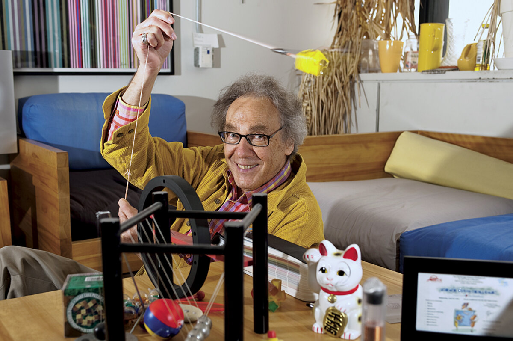

Portfolio Overview
This portfolio is organized around seven Saskatchewan Polytechnic instructor competency areas. Each section includes a reflection, evidence, and supporting artifacts.
Teaching Philosophy
My teaching philosophy is built on the idea that students learn best by actively engaging with real systems. In technical fields such as electronics, communications, microcontrollers, and cybersecurity, understanding comes from building, testing, failing, troubleshooting, and improving.
My approach is strongly influenced by three key educational role models: Richard Feynman, Fred Rogers, and Walter Lewin. Each has shaped specific elements of my instructional practice.
Teaching Role Models
Richard Feynman
Richard Feynman was a Nobel Prize-winning physicist known as "The Great Explainer." He demonstrated that true understanding is not shown through complexity, but through the ability to explain ideas simply and clearly.
At the core of his approach was clarity through simplification. He relied heavily on analogies, real-world examples, and storytelling rather than memorization. He encouraged questioning and openly acknowledged confusion, modeling that uncertainty is a natural part of learning.
Applying Feynman's approach reinforces the importance of deep understanding over surface-level knowledge. Using analogies connects new information to what students already know, improving retention. Encouraging questions helps students take ownership of their learning.
Fred Rogers
Fred Rogers demonstrated that effective teaching is not about delivering information quickly, but about creating an environment where learners feel safe, respected, and able to process ideas at their own pace.
At the core of Rogers' approach was intentional, thoughtful communication: speaking clearly, allowing time for reflection, and maintaining consistent routines. He placed a strong emphasis on emotional safety, acknowledging that learners bring feelings and anxieties into the learning environment.
Applying Rogers' approach reinforces the importance of clarity, structure, and empathy. Creating a supportive and predictable environment reduces anxiety and allows students to engage more fully—especially adult learners returning to education with varying levels of confidence.

Walter Lewin
Walter Lewin taught at MIT for approximately 43 years. Where Feynman made ideas clear through explanation, Lewin made them visible through action—earning him the title of the "Great Demonstrator."
I have adopted his use of demonstrations and hands-on activities to support learning. In electronics courses, this includes building circuits, testing signals, and troubleshooting systems in real time. I also incorporate prediction-based learning: before a demonstration I ask students to anticipate what will happen, encouraging active engagement and critical thinking.
Overall, incorporating Lewin's style allows me to move beyond purely theoretical instruction and create a more interactive, practical learning experience that connects theory to application.
My teaching philosophy is the result of integrating the approaches of Richard Feynman, Fred Rogers, and Walter Lewin into a cohesive instructional framework.
Feynman’s emphasis on clarity through simplification shapes how I introduce new concepts. I aim to reduce complexity without removing meaning, using analogies and structured explanations to help students build genuine understanding rather than rely on memorization. This approach ensures that students can explain ideas themselves, which is a key indicator of mastery.
Overall, my instruction balances structure with flexibility, allowing me to deliver clear content while adapting to student needs and supporting ongoing engagement.
Rogers’ influence is evident in the learning environment I strive to create. Technical content can be intimidating, particularly for students who lack confidence, so I prioritize a classroom culture that is respectful, predictable, and supportive. This allows students to engage with challenging material without unnecessary anxiety.
Lewin’s impact is seen in how I deliver content through demonstration and hands-on experience. By asking students to make predictions and then observe real outcomes, I create opportunities for active learning that connect theory to practice.
Together, these approaches allow me to balance clarity, environment, and experience—supporting students not just in learning content, but in developing confidence and the ability to apply their knowledge.
Instruction & Delivery
Effective delivery depends on how clearly information is structured, presented, and understood. I focus on multiple methods—visual, auditory, and hands-on—to support different learning styles and connect theory to practice.
My approach to instruction is grounded in the idea that teaching is a communication process. I organize content logically, use simple language, and rely on analogies and real-world examples to help students make connections. Lessons build progressively from basic concepts to more complex ideas.
I regularly incorporate feedback and reinforcement through discussions, quizzes, and practice activities. Clear expectations and consistent routines help minimize confusion, and a student-centered approach encourages active participation and collaboration.
Overall, my instruction balances structure with flexibility, allowing me to deliver clear content while adapting to student needs and supporting ongoing engagement.
Supporting Documents
- Analyze Your Own Formative Assessment Experience Supports Instruction & Delivery through active learning, role-play, engagement, and hands-on microprocessor instruction.
- Assignment Revising Instructions Supports Instruction & Delivery through clearer sequencing, scaffolding, and accessible assignment design.
- Applying Universal Design for Learning Supports Instruction & Delivery by showing multimodal, student-centred learning design.
- Line Following Robot Race Supports Instruction & Delivery by showing multimodal, student-centred learning design.
Robot Race Demonstration
This video shows the final performance of student-built line-following robots, demonstrating system integration, troubleshooting, and iterative improvement.
Assessment & Evaluation
My assessment philosophy focuses on evaluating both understanding and process. I design assessments that are authentic, clearly aligned with learning outcomes, and reflective of real-world technical problem-solving.
Combining formative observation with structured reflection provides a fuller picture of student learning. Students often show deeper understanding through explanation, process documentation, and troubleshooting than through final answers alone.
My goal is for assessments to feel purposeful rather than punitive—opportunities for students to demonstrate what they know and receive meaningful feedback to grow.
- Formative assessment through microprocessor role-play
- Multiple-choice test design aligned to electrical learning outcomes
- Reflection-based troubleshooting assignment
Supporting Documents
- Analyze Your Own Formative Assessment Experience Primary evidence for formative assessment, observation of learner understanding, and reflection on student performance.
- Alignment with Multiple-Choice Test Guidelines Primary evidence for assessment design, outcome alignment, test clarity, and fair evaluation practices.
- Assignment Revising Instructions Supports assessment through reflection-based troubleshooting and process-focused evaluation.
Diversity & Inclusion
I design my courses to reduce barriers and support diverse learners through Universal Design for Learning. My goal is to create environments where students can access content, engage meaningfully, and demonstrate understanding in multiple ways.
Implementing UDL has helped reduce anxiety and improve engagement, especially for adult learners returning to school. By using multiple channels for learning, I can reduce "noise" in the learning environment and improve student confidence.
I recognize that learners bring different backgrounds, abilities, and life experiences into the classroom. Designing with those differences in mind—rather than retrofitting accommodations after the fact—leads to a stronger experience for everyone.
- UDL implementation focused on engagement
- Structured routines and clear assignment sequencing
- Hands-on, visual, verbal, and collaborative learning modes
Supporting Documents
- Applying Universal Design for Learning Primary evidence for UDL, engagement, accessibility, adult learner support, and reducing barriers.
- Assignment Revising Instructions Supports Diversity & Inclusion by showing how clear instructions reduce uncertainty and cognitive barriers.
- Referance Letter for UDL Supports inclusive technology selection through accessibility, equity, and device-access considerations.
Indigenization & Reconciliation
I am committed to integrating Indigenous perspectives into my teaching in ways that are authentic, respectful, and connected to practice—including recognizing the value of storytelling, relational learning, and community connection.
Reflecting on Indigenous approaches to education has helped me recognize that storytelling can be more than a way to explain concepts. It can create connection, context, and meaning while supporting a more relational learning environment.
This is an area of ongoing growth for me. I am committed to continuing to learn, to listening to Indigenous voices and perspectives, and to finding meaningful—not tokenistic—ways to integrate these approaches into technical education.
- Final reflection on Indigenization and reconciliation
- Use of storytelling as a teaching method
- Program-level inclusion of Indigenous studies and community-focused projects
Supporting Documents
- Final Reflection Primary evidence for Indigenization & Reconciliation, including reflection on storytelling, Indigenous ways of knowing, and ongoing community connection.
- 4 Seasons of Reconciliations PD “4 Seasons of Reconciliation” is a structured learning program designed to build understanding of Indigenous history, perspectives, and reconciliation in Canada.
Curriculum Development
My approach to curriculum development focuses on clear outcomes, logical learning progression, accessible instructions, and alignment between learning activities, assessments, and industry expectations.
Clear curriculum design reduces uncertainty and cognitive load. When learning activities are sequenced carefully, students can focus on the technical thinking rather than trying to decode unclear instructions.
Revisiting and revising existing course materials has reinforced how much small changes in clarity and structure can have on student confidence and performance.
- Revised assignment instructions with clearer sequencing
- Outcome-aligned multiple-choice assessment design
- Course and program redesign work
Supporting Documents
- Assignment Revising Instructions Primary evidence for curriculum design, scaffolding, clear instructions, and alignment to troubleshooting outcomes.
- Alignment with Multiple-Choice Test Guidelines Supports Curriculum Development by aligning test items with learning outcomes and foundational electrical concepts.
Technology
I integrate technology purposefully to improve engagement, support different learning styles, and connect classroom learning to real technical systems. Technology is selected based on its ability to improve learning, not simply because it is new.
Technology can make abstract concepts more visible and interactive. At the same time, I must evaluate tools for accessibility, equity, safety, privacy, and alignment with learning outcomes before introducing them to students.
My experience evaluating PhET simulations gave me a structured framework for assessing educational technology that I now apply broadly when selecting tools for my courses.
- PhET Interactive Simulations review
- Applied electronics and microcontroller labs
- Use of simulation, measurement, and diagnostic tools
Supporting Documents
- Learning Technology Review Primary evidence for Technology through evaluation of PhET simulations, accessibility, privacy, equity, and classroom application.
- Analyze Your Own Formative Assessment Experience Supports Technology through applied microprocessor instruction and technical system visualization.
Professionalism, Development & Mentorship
I view teaching as an evolving professional practice that requires reflection, continuous learning, industry currency, and a willingness to support learners and colleagues.
My professional growth is shaped by reflection, experimentation, and a commitment to improving student learning. I aim to share effective practices with colleagues and contribute to broader instructional improvement within my program.
Engaging with the PBIT program has been an important part of formalizing my thinking about what good teaching looks like and why it works—moving from intuition to intentional, evidence-informed practice.
- UDL reflection and future growth plan
- Indigenization reflection
- Ongoing development of applied technical teaching resources
Supporting Documents
- Applying Universal Design for Learning Primary evidence for professional growth through reflection, future planning, and intent to support colleagues with UDL strategies.
- Final Reflection Supports Professionalism through reflective practice, reconciliation learning, and ongoing professional development.
Appendices & Supporting Artifacts
All downloadable documents referenced throughout this portfolio are collected here for convenience.
- Analyze Your Own Formative Assessment Experience Supports Instruction & Delivery, Assessment & Evaluation, Diversity & Inclusion, and Technology.
- Assignment Revising Instructions Supports Instruction & Delivery, Assessment & Evaluation, Diversity & Inclusion, and Curriculum Development.
- Alignment with Multiple-Choice Test Guidelines Supports Assessment & Evaluation and Curriculum Development.
- Final Reflection Supports Indigenization & Reconciliation and Professionalism, Development & Mentorship.
- Applying Universal Design for Learning Supports Diversity & Inclusion, Instruction & Delivery, and Professionalism, Development & Mentorship.
- Learning Technology Review Supports Technology, Diversity & Inclusion, Instruction & Delivery, and Curriculum Development.
- Instructor Competency Self-Rating Document Framework document used to organize the portfolio around Saskatchewan Polytechnic instructor competencies.